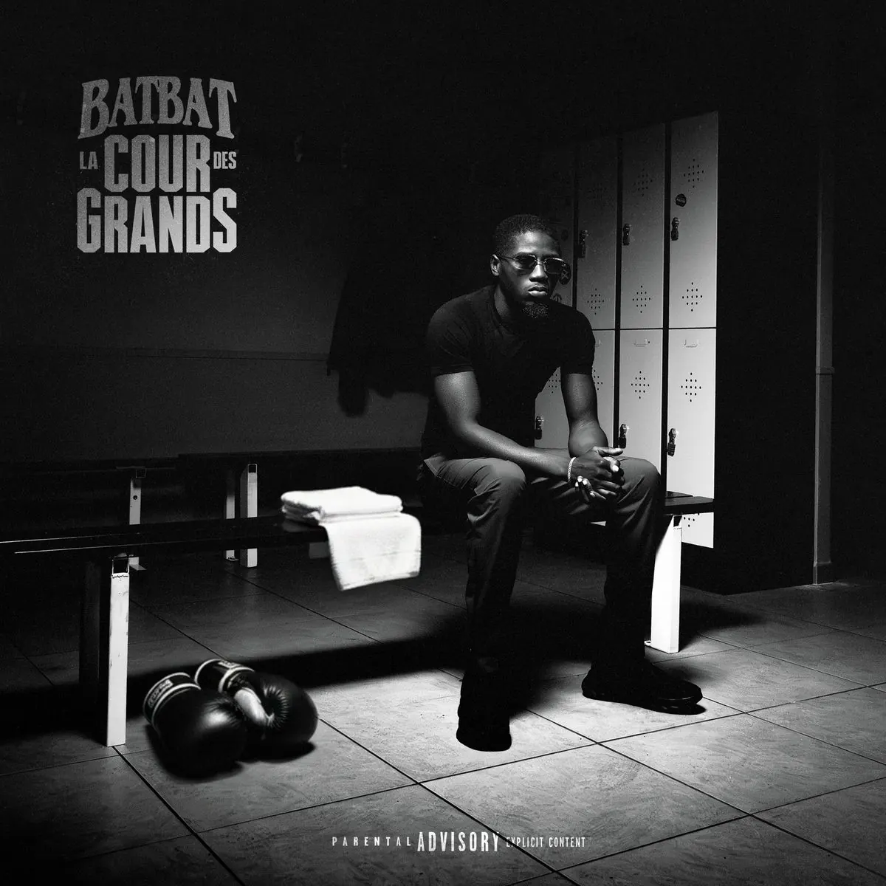

Publié le 12 novembre 2026

Le rappeur parisien BatBat a sorti son album La cour des grands le 6 novembre 2026 chez Slimak Productions. Le projet compte neuf titres sombres ancrés dans la trap de rue.
L'artiste originaire des 19e et 20e arrondissements de Paris confirme son style incisif. Selon la fiche Apple Music du projet, le format dure 24 minutes. BatBat poursuit le chemin tracé avec son précédent opus Crime dans le sang. Il prolonge aussi la dynamique de son single Dembele Yamal enregistré avec La Mano 1.9.
| Titre | Durée | Invité |
|---|---|---|
| GOD BLESS | 3:13 | Solo |
| LA FAILLE | 2:43 | Mous-K |
| LANGAGE CODÉ | 2:15 | Solo |
| SOMBRE | 2:44 | La Rvfleuze |
| SUV | 2:27 | Solo |
| TROP SOUVENT | 3:18 | Solo |
| MISSION | 2:40 | Solo |
| FILATURE | 2:30 | Solo |
| ÉTAGE PAR ÉTAGE | 2:08 | Solo |
Que vaut le contenu musical de La cour des grands ?
La cour des grands s'appuie sur une trap noire et directe. BatBat conserve son timbre grave et son débit serré du début à la fin. Les morceaux s'enchaînent sans pause avec des prods lourdes et de la bass percutante.
Les featurings apportent un relief indispensable au projet. Sur LA FAILLE, Mous-K pose un couplet nerveux qui complète bien le refrain de BatBat. Le titre SOMBRE réunit BatBat et La Rvfleuze dans un registre obscur très efficace. Ce morceau montre l'alchimie entre deux figures montantes de la scène parisienne. On retrouve aussi la présence de la rappeuse dans les récentes certifications du rap français.
Cependant, l'album manque parfois de variété instrumentale. Plusieurs prods utilisent des schémas de drums très similaires. La brièveté des neuf pistes empêche certains thèmes de développer toute leur profondeur. Le projet reste néanmoins une carte de visite solide pour écouter la trap actuelle de la capitale.
Comment BatBat s'inscrit-il dans le rap du nord-est parisien ?
BatBat revendique haut et fort ses racines de la Honda 19. Ses textes décrivent la réalité des quartiers populaires entre le 19e et le 20e arrondissement. Son univers s'inscrit dans la continuité de la scène street parisienne.
Cette identité de quartier renforce l'authenticité de sa démarche. Lors de son passage dans Planète Rap sur Skyrock, l'artiste a rassemblé de nombreux rappeurs locaux. Cette démarche illustre la vitalité du rap dans le 19e arrondissement. BatBat privilégie le terrain et la proximité avec son public plutôt que des artifices marketing.
Un format court taillé pour la scène
Avec 24 minutes au compteur, cet album vise une efficacité maximale sur scène. Les morceaux comme SUV ou MISSION possèdent l'énergie idéale pour faire sauter les salles de concert. Les refrains percutants facilitent la reprise en chœur par le public.
BatBat signe un projet sans concession qui répond aux attentes des amateurs de street rap. La suite dépendra de sa capacité à élargir ses sonorités tout en gardant cette hargne brute.